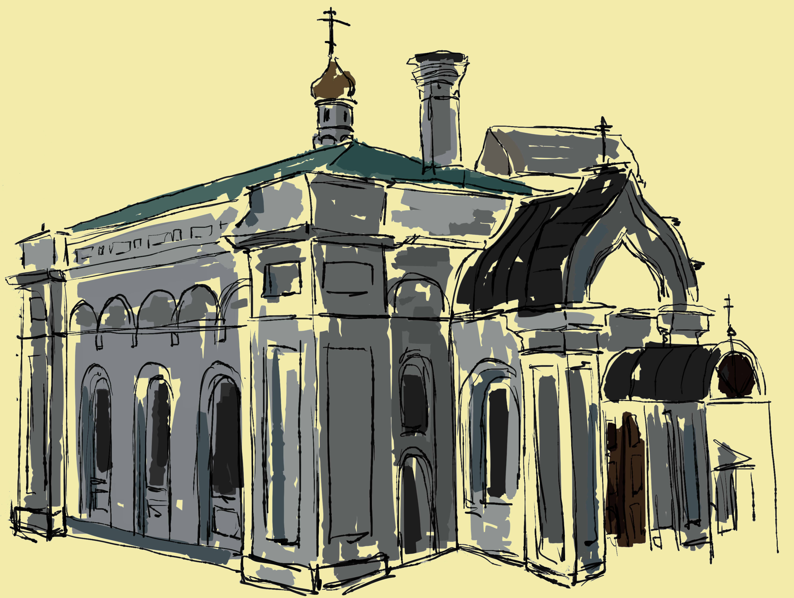

ЦЕРКОВЬ СВЯТОГО ВЕЛИКОМУЧЕНИКА ГЕОРГИЯ ПОБЕДОНОСЦА -- КАМЕННЫЙ
ХРАМ XVII ВЕКА
С КОЛОКОЛЬНЕЙ СЕРЕДИНЫ XVI ВЕКА НА ТЕРРИТОРИИ
МУЗЕЯ-ЗАПОВЕДНИКА КОЛОМЕНСКОЕ. РАСПОЛОЖЕН
В РАЙОНЕ НАГАТИНСКИЙ ЗАТОН ЮЖНОГО АДМИНИСТРАТИВНОГО ОКРУГА ГОРОДА МОСКВЫ. ПАМЯТНИК РУССКОГО ЗОДЧЕСТВА.
ПО СВЕДЕНИЯМ РУССКИХ ИСТОРИКОВ А. Н. КОРСАКОВА И Ю. И. ШАМУРИНА, ЦЕРКОВЬ ГЕОРГИЯ ПОБЕДОНОСЦА БЫЛА ОСВЯЩЕНА В 1678 ГОДУ. В 1840—1842 ГОДАХ ДЕРЕВЯННЫЕ И ЧАСТЬ КАМЕННЫХ СТЕН ЦЕРКВИ БЫЛИ РАЗОБРАНЫ. НА МЕСТЕ ДЕРЕВЯННОЙ ТРАПЕЗНОЙ КАК ПРИСТРОЙКА К ДРЕВНЕЙ ГЕОРГИЕВСКОЙ КОЛОКОЛЬНЕ ПО ПРОЕКТУ Е. Д. ТЮРИНА БЫЛА ВОЗВЕДЕНА ЦЕРКОВЬ СВЯТОГО ГЕОРГИЯ ПОБЕДОНОСЦА.
В ХОДЕ ЭТОЙ РЕКОНСТРУКЦИИ ОБЛИК ДРЕВНИХ СООРУЖЕНИЙ БЫЛ ЗНАЧИТЕЛЬНО ИСКАЖЁН. ПОД ШТУКАТУРКУ БЫЛ СРУБЛЕН ВЕСЬ НАРУЖНЫЙ ДЕКОР И РАСТЁСАНЫ ОКОННЫЕ ПРОЁМЫ. С ЗАПАДНОЙ СТОРОНЫ БЫЛА ВЫСТРОЕНА НОВАЯ БОЛЬШАЯ КИРПИЧНАЯ ТРАПЕЗНАЯ. ВНУТРИ СТОЛПА КОЛОКОЛЬНИ БЫЛО СДЕЛАНО НИКОГДА ПРЕЖДЕ НЕ СУЩЕСТВОВАВШЕЕ СВОДЧАТОЕ ПЕРЕКРЫТИЕ.
РАБОТЫ ПО ВОССТАНОВЛЕНИЮ ПЕРВОНАЧАЛЬНОГО ОБЛИКА ЦЕРКВИ НАЧАЛИСЬ В 1920-Х ГОДАХ ПО ИНИЦИАТИВЕ П. Д. БАРАНОВСКОГО. В ХОДЕ РЕСТАВРАЦИИ БЫЛИ РАЗОБРАНЫ ВСЕ ПОЗДНИЕ ПРИСТРОЙКИ ЗА ИСКЛЮЧЕНИЕМ ОДНОЭТАЖНОЙ ПАЛАТЫ XVII ВЕКА. КОЛОКОЛЬНЕ В ОСНОВНОМ ВЕРНУЛИ ПЕРВОНАЧАЛЬНЫЙ ОБЛИК. В ГОДЫ ВЕЛИКОЙ ОТЕЧЕСТВЕННОЙ ВОЙНЫ РЕСТАВРАЦИЯ БЫЛА ПРЕРВАНА И ЗАВЕРШЕНА В 1966—1967 ГОДАХ ПОД РУКОВОДСТВОМ Н. Н. СВЕШНИКОВА. В ТРАПЕЗНОЙ ДОЛГОЕ ВРЕМЯ ХРАНИЛИСЬ ФОНДЫ МУЗЕЯ.
В 2000 ГОДУ ПОСЛЕ ОСВЯЩЕНИЯ ТРАПЕЗНАЯ ПРЕВРАТИЛАСЬ В ХРАМ СВЯТОГО ГЕОРГИЯ. В 2004—2006 ГОДАХ В ЦЕРВКИ БЫЛА ВЫЯВЛЕНА СОЗДАННАЯ В XIX ВЕКЕ СЛОЖНАЯ КАЛОРИФЕРНАЯ СИСТЕМА ОТОПЛЕНИЯ ЗДАНИЯ. ТОГДА ЖЕ БЫЛИ ПРОВЕДЕНЫ РАБОТЫ ПО ВОССТАНОВЛЕНИЮ ФРАГМЕНТОВ МАСЛЯНОЙ ЖИВОПИСИ. В 2007 ГОДУ В ЦЕРКВИ УСТАНОВЛЕН ИКОНОСТАС.
В ХРАМЕ РАЗМЕЩАЕТСЯ ВЫСТАВКА МУЗЕЯ ДРЕВНИЙ ХРАМ СВЯТОГО ГЕОРГИЯ, СОДЕРЖАЩАЯ ИКОНЫ, СТАРОПЕЧАТНЫЕ КНИГИ, РУКОПИСНЫЕ ДОКУМЕНТЫ, А ТАКЖЕ ОБРАЗЦЫ ЛИЦЕВОГО ШИТЬЯ И РЕЗЬБЫ ПО ДЕРЕВУ, ИЗРАЦЫ, АРХИТЕКТУРНУЮ ГРАФИКУ И ФОТОГРАФИИ XIX—XX ВЕКОВ.